Sitio web, sistema de diseño y prototipo navegable para agendar una cita veterinaria en menos de dos minutos.
Lenin AlvaradoLexpin · Caracas, Venezuela
2026
01 · Investigación
Proto-personas
S1 · Síntesis
Se identificaron cinco tipos de cliente. Se eligieron tres perfiles opuestos en edad, habilidad digital y contexto familiar para poner a prueba las decisiones centrales: reserva corta, emergencia visible, precios claros e historial de vacunas.
Cinco tipos identificados: joven con su primera mascota · adulto mayor con varias mascotas · familia con niños · dueño de una mascota exótica · dueño de una mascota con enfermedad crónica.
Camila Torres
24 años · community manager Los Ruices · primera mascota Miga, perra mestiza de 8 meses
“Quiero saber hoy mismo si es normal y cuánto cuesta, sin llamar tres veces.”
Deseos
Saber si es urgencia.
Precio y disponibilidad reales.
Reservar en < 2 minutos.
Frustraciones
Formularios de “te contactamos”.
Sin precios ni cupos.
Letras y botones diminutos.
Decisiones de diseño
Reserva en 3 pasos y 4 clics.
Precio “Desde $” + nota BCV.
Calendario con horarios de 30 min.
Supuesto
Reservará desde el celular en una pausa corta.
El precio pesa más que un relato largo.
Rafael Méndez
68 años · profesor jubilado La Candelaria · baja alfabetización digital Rocky, Luna y Canela; usa teléfono fijo
“Yo prefiero hablar con una persona. Si la página no me dice la dirección y el teléfono, no sé qué hacer.”
Deseos
Llamar o escribir por WhatsApp.
Ver dirección y horario.
No crear cuentas.
Frustraciones
Menús profundos.
Texto pequeño.
Formularios largos.
Decisiones de diseño
Dock de emergencia global.
Menú de 6 opciones sin submenús.
Teléfono acepta fijo 02XX.
Supuesto
Prefiere resolver por teléfono.
Su hija le ayuda con formularios.
Familia Rojas
Andrea 38 · Tomás 40 El Hatillo · dos niños (6 y 9) Bruno, labrador de 4 años
“Necesito saber que Bruno va a estar bien, cuánto cuesta y si puedo llevarlo después del colegio.”
Deseos
Confianza y prueba social.
Precios y duración.
Horario compatible con el colegio.
Frustraciones
Esperar horas por WhatsApp.
No poder compartir la cita.
Perder la cartilla de vacunas.
Decisiones de diseño
Inicio con equipo y testimonios.
Confirmación compartible.
“Mis mascotas” con historial.
Supuesto
Compara reseñas antes de pagar.
El recordatorio es parte de la decisión.
Método: proto-personas construidas con lógica y supuestos justificados, no con entrevistas. El detalle completo —frases, miedos, motivaciones, escenarios y trazabilidad— está en docs/01-investigacion.md.
02 · Experiencia
Journey map
S2 · Camila + Miga
Escenario del brief: “Mi mascota amaneció decaída, no quiere comer y necesito llevarla al veterinario.”
Detección
Búsqueda
Evaluación
Agendamiento
Confirmación
Post-cita
Acciones
Observa que Miga no come y está decaída; revisa fiebre o vómito.
Busca “veterinaria cerca de mí”; compara horarios, emergencias y precios.
Lee servicios, equipo, reseñas y teléfono; decide si es urgencia.
Elige servicio, mascota, horario y datos; confirma.
Recibe el resumen, lo comparte y agrega la cita al calendario.
Sigue indicaciones; consulta historial y próximo refuerzo.
Pensamientos
“¿Esto es grave o exagero?”
“¿Cuál atiende hoy? ¿Por qué ninguna dice el precio?”
“¿Son confiables? ¿Puedo llegar antes del trabajo?”
“¿Este horario es real? No quiero repetir datos.”
“¿Quedó confirmada? ¿Se lo mando a mi pareja?”
“¿Qué debo vigilar? ¿Cuándo es el próximo refuerzo?”
Emociones
Preocupación
Duda y prisa
Tensión / esperanza
Estrés por el formulario
Alivio
Tranquilidad
Contactos
Casa, teléfono, termómetro.
Google, Instagram, sitios, Maps.
Home, servicios, equipo, reseñas, WhatsApp.
Formulario, calendario, WhatsApp.
WhatsApp, confirmación, calendario.
WhatsApp, correo, “Mis mascotas”.
Dolores
No sabe si debe ir a urgencias.
Webs sin precios; horarios contradictorios.
No ve disponibilidad ni especialidades.
Formulario largo; errores poco claros; miedo a perder lo escrito.
No llega confirmación; no puede compartir.
No recuerda la vacuna; no tiene historial.
Oportunidades
F01 Emergencia global con llamada y WhatsApp.
F02 Precio, duración y nota BCV; F08 equipo y ubicación.
F03 Calendario real; F08 horarios y especialidades.
F04 3 pasos con borrador; F05 validación inline.
F06 Resumen, WhatsApp y calendario.
F07 Recordatorios e historial.
Lectura: el pico de tensión está en el agendamiento, no en la detección. La confirmación devuelve la calma y la post-cita convierte la visita en relación. Por eso el flujo cuida el abandono, el conflicto de horario y la confirmación compartible.
Reserva sin fricciónTres pasos, borrador de 24 h, validación inline y salida con reanudación. El objetivo es que el estrés del formulario no rompa la decisión.
Confianza antes de pagarEquipo, testimonios, precios referenciales y nota BCV en la misma ruta. La urgencia no se esconde: está en todas las pantallas.
ContinuidadConfirmación con código, WhatsApp y calendario; después, historial de vacunas y recordatorios en “Mis mascotas”.
03 · Mercado
Análisis de competencia
S3 · Visitado 2026-10-29
Tres sitios reales, dos de Caracas. Se observó la primera pantalla y el inicio del flujo de cita en escritorio (1440 px) y móvil (390 px). Las capturas están en docs/assets/competencia/.
Veterinaria Los ChorrosCaracas, Venezuela
DogtorVetCaracas, Venezuela
Vets4PetsReino Unido · referencia
¿Se entiende en 5 s?
Sí: 40 años, urgencias 24 h y CTA. Hero con contraste irregular en móvil.
Sí: clínica, servicios y calendario. El CTA de reserva no está en el hero.
Sí, pero es una red: no se entiende cuál es la sede ni la zona.
¿Cómo agenda?
WhatsApp (1 clic + conversación) o formulario de 4 campos. Sin fecha ni cupo; confirmación manual.
“Calendario de citas” → servicio → fecha/hora → datos → confirmación. 4 pasos observados.
“Request Appointment” → formulario de solicitud. Sin calendario; el equipo contacta después.
¿Muestra precios?
No en la home.
No en la home.
No de consulta; solo una revisión promocional por £10.
Emergencia, horario y ubicación
Emergencia y dirección arriba; horario más abajo. En móvil la navegación desaparece.
Emergencia en el menú; dirección y horario abajo. “Ubicación” abre un popup JS.
No en la home: hay que buscar una práctica. Sin acceso a emergencias.
¿Funciona en celular?
Parcial: se adapta, pero sin menú visible y con hero de bajo contraste.
Sí: menú y botones visibles; sin desbordamiento. Reserva requiere scroll.
Sí: menú y barra de acciones visible; el aviso de cookies tapa el inicio.
Diseño visual
Profesional y familiar; azul profundo, serif y carrusel. Contraste irregular.
Teal, foto grande y tarjetas suaves; cercano, sin CTA destacado en el hero.
Corporativo y pulido; coherente pero genérico de cadena.
Lo que hace bien
Emergencia y ubicación desde el primer píxel; prueba social concreta; WhatsApp directo.
Calendario dentro del sitio con servicios y duraciones; emergencia y teléfono a mano.
Jerarquía y acciones siempre visibles en móvil; solicitud clara.
Lo que hace mal
Sin precios ni disponibilidad; oculta la navegación móvil; hero con contraste bajo.
Sin precios; CTA de reserva fuera del hero; ubicación dependiente de JS.
No resuelve urgencia, horario ni sede en la home; solo recibe solicitudes.
Qué adoptar, qué evitar y qué haremos diferente
Adoptar de Los Chorros la jerarquía de emergencia y ubicación, la prueba social concreta y el WhatsApp directo.
Adoptar de DogtorVet la reserva dentro del sitio con servicio, fecha y hora visibles.
Adoptar de Vets4Pets la claridad de las acciones principales, adaptada a una sola sede.
Evitar ocultar la navegación en móvil, depender solo de WhatsApp y publicar héroes con contraste irregular.
Evitar precios ausentes y urgencias escondidas: las dos preguntas que más pesan son “¿cuánto cuesta?” y “¿puedo ir ahora?”.
Nuestra diferencia: precio en USD con nota BCV, disponibilidad real, 3 pasos con borrador, confirmación compartible e historial de vacunas; meta: cita en menos de 2 minutos.
El card sorting de Camila, Rafael y la familia Rojas coincidió en cinco bloques: urgencia, servicios, reserva, confianza y seguimiento. De ahí sale un menú de seis opciones sin submenús y una emergencia global que no compite por un ítem.
Nivel 0 · Inicioindex.html
↓
Serviciosservicios.html
Nivel 2 · Detalleservicio.html?s=…
Equipoequipo.html
Mis mascotasmis-mascotas.html
Nivel 2 · Historialsección de vacunas
Contactocontacto.html
Nivel 2 · Mapa y horariossección de contacto
Agendar citaagendar.html
Paso 2 · Fecha y horaagendar-paso-2.html
Paso 3 · Datosagendar-paso-3.html
Cita confirmadacita-confirmada.html
Elementos globales · presentes en todas las páginas
Header con logo y menú de 6Footer con dirección, horario y WhatsAppBotón de emergencias fijoToggle claro / oscuro
Documentación y entregables · fuera del menú
Documentación del proyecto (hub)Guía de estilosÍndice de wireframes + 11 wireframesPágina 404Informe PDF
Menú ≤ 6Inicio, Servicios, Equipo, Mis mascotas, Contacto y Agendar cita. Sin submenús.
≤ 3 clicsLas páginas de cliente y la documentación principal están a 1–3 clics. La confirmación es el estado final del flujo, no una página que haya que descubrir.
10 pantallasLas diez obligatorias están cubiertas, más “Mis mascotas”, guía de estilos y wireframes.
Profundidad desde Inicio
1 clic · Servicios, Equipo, Mis mascotas, Contacto, Agendar1–2 clics · Detalle de servicio2 clics · Historial de vacunas, mapa y horarios, paso 23 clics · Paso 3; la confirmación es el estado final del flujo
05 · Flujo
Agendar una cita
S5 · Camino ideal + alternativas

5 pantallas · 4 clicsInicio → Paso 1 → Paso 2 → Paso 3 → Cita confirmada. El paso 1 une servicio y mascota; el paso 3 une datos y confirmación.
EntradasGoogle, Instagram y el detalle de servicio. La última llega con el servicio preseleccionado.
AlternativasEmergencia, horario ocupado, campos inválidos, volver sin perder datos y abandono con borrador.
Objetivo≤ 2 minutos. Estimación de diseño ≈ 100 s, sin medición con usuarios.
◯ Óvalo: inicio / fin▭ Rectángulo: pantalla o acción◇ Rombo: decisión→ Flecha: avanceⒶ Ⓑ Ⓒ Conectores entre columnas
06 · Decisiones
Diseño y sistema visual
S7 · S10 · S11
Decisiones que sostienen el producto
Mobile-first: una columna, 48 px de objetivo táctil, tipografía fluida y dock que reserva espacio. Probado a 390 y 1440 px en 33 páginas.
Emergencias siempre a mano: dock fijo con llamada y WhatsApp en todas las pantallas; la pregunta de emergencia interrumpe el formulario.
WCAG AA: 74 pares de tokens × 2 temas = 148/148; axe-core en 33 páginas × 2 temas = 66/66 sin violaciones serias o críticas.
Estados completos: hover, activo, deshabilitado, error y seleccionado con borde, icono, texto o aria, nunca solo color.
Microinteracciones: press, transición de paso, selección de horario, check de éxito y pulso único del dock; todo se desactiva con prefers-reduced-motion.
Extras: modo oscuro, fotos reales, carrusel de equipo, “Mis mascotas” con foto y refuerzo, y microinteracciones; sin prueba de usabilidad.
De la persona a la interfaz
Camila: 3 pasos, precio BCV, calendario real y borrador.
Rafael: menú de 6, teléfono fijo aceptado y dock global.
Rojas: confianza, confirmación compartible e historial.
Guía de estilos · resumen
Primario#0E6B5F
Acento#B45309
Emergencia#B42318
Fondo#F6FAF8
Texto#0E211E
Suave#D9F2EC
Nunito 800
Títulos con personalidad redondeada; cuerpo de 16 px y medida de 68 caracteres. Pesos 400, 600, 700 y 800.
Logo: huella en placa verde azulado; funciona en claro y oscuro.
Iconografía: Lucide 24 px (ISC) + WhatsApp de Simple Icons (CC0); sprite generado y decorativos ocultos.
Formularios: etiqueta, ayuda y error inline con aria-invalid y aria-describedby.
Modo oscuro: tokens semánticos; la preferencia se guarda y respeta el sistema.
148/148 contraste AA
66/66 axe sin bloqueos
197/197 pruebas Playwright
Agendar citaReposo
Agendar citaHover
Agendar citaActivo
Agendar citaDeshabilitado
correo@Error inline
Guía viva: la paleta completa, los ratios, la tipografía, los iconos y todos los estados están en guia-de-estilos.html. Los valores viven en tokens.css y las pruebas los verifican.
Créditos: iconografía Lucide (ISC) y WhatsApp de Simple Icons (CC0); fotos de Pexels; tipografía Nunito bajo SIL OFL 1.1; clínica, dirección, precios, equipo y testimonios ficticios con fines académicos. Capturas generadas con Playwright a 390 y 1440 px.